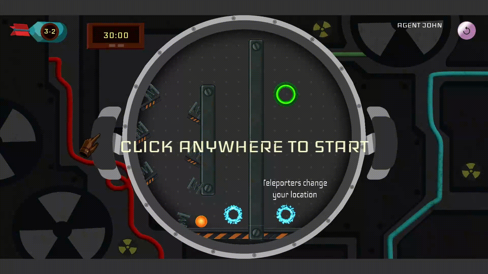

Tilt Tilt Boom
Play on DigiPen GalleryA 2D physics puzzle game built on a custom C++ game engine. You play as a bomb defuser tilting a circular bomb chamber to guide an unstable atom toward the exit port before the timer runs out.
Quick Specs
Engine architecture, kinematic math, and collision sweeps coded without third-party physics libraries.
Collaborated with design, art, and programming leads in an agile team using Git feature branching.
1. Core Controls & Tilting Physics
Clicking and dragging bomb handles to influence gravity vectors on the atom.

Players click and drag the outer handles to rotate the chamber. The atom rolls and accelerates based on realistic momentum, requiring smooth cursor control so it doesn't slam into hazards.
How the Mechanics Were Built
As the Physics Champion, my biggest goal was avoiding hardcoded one-off scripts for every hazard. I built a modular game-object system so our level designers could drop in interactive obstacles that hook directly into the atom's collision and movement routines.
Kinematics & Collision Checks
Wrote custom circle-to-segment and AABB collision routines in C++ to make sure the atom bounces and rolls with a tactile, satisfying weight.
Reusable Object System
Game objects share a trigger and response system. Adding a new hazard like a teleporter or spring didn't require re-writing base collision logic.
Solving the FPS Bottleneck: 2D Sweep & Prune
Eliminating brute-force loop checks to keep performance smooth.
Once level designers started stacking complex puzzles with dozens of springs, buttons, and barriers in a single stage, our frame rate tanked. Because physics in our custom engine was CPU-heavy, the initial system ran brute-force checks—testing every object against every other object on every frame.
Checking every entity against every other entity meant collision checks scaled exponentially. As soon as a stage had lots of game objects, redundant loops wasted CPU cycles and caused noticeable stutter during fast tilts.
I researched broad-phase algorithms and implemented 2D Sweep and Prune. Objects are sorted along the X and Y axes, meaning the engine only runs expensive collision math if their bounding boxes actually overlap nearby.
Cutting out thousands of unnecessary checks per tick brought our physics step down to near-zero latency, keeping frame rates locked consistently above 60 FPS even on the most crowded levels.
Interactive Game Objects
2. Launch Springs
High-impulse bounce pads for navigating vertical chambers.

Bounces the atom with extra force along the spring's face normal, letting players reach higher areas and clear large gaps inside the circular arena.
3. "Bomb-in-a-Bomb" Booby Trap
A 5-second rapid pressure puzzle.

A mini trap inside levels. Players have to hit two separate buttons within 5 seconds—if the timer hits zero, the device explodes instantly. Forces fast, controlled tilting under pressure.
4. Momentum Teleporters
Instant relocation while preserving speed and trajectory.

Instantly warps the atom to another zone while keeping its exact entry speed and angle, opening up non-linear level navigation.
5. Button Doors & Gates
Pressure switches wired to barrier gates.

Pressing the red button retracts a locked gate. Forces players to solve a routing puzzle instead of just letting the atom drop straight down to the exit.
6. Reverse-Gravity Bubbles
Encapsulates the atom and flips gravity temporarily.

On contact, the atom gets trapped inside the bubble and gravity flips upside down. The atom slowly floats up for a few seconds before the bubble pops, restoring normal weight.